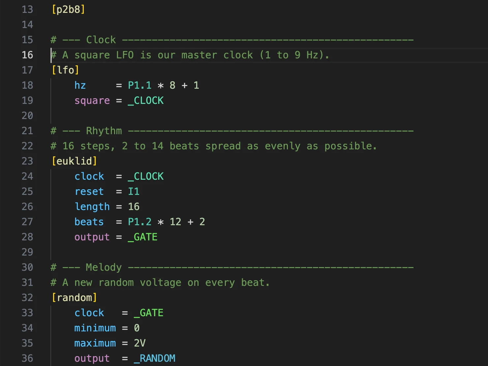

Write once, use anywhere
Named inputs, defaults and outputs. Comments become hover docs.
Error checking, autocompletion, hover docs and one-click upload to the card. Plus megacircuits: your own circuits, reusable in any patch.


Wire circuits together once and use the result in any patch like a built-in circuit. Droider compiles it
into a plain droid.ini.
# [randomnote]: a random note in C minor
# on every clock.
[input]
# a new note on each clock
clock
# how far it can jump (1V = one octave)
range = 2V
[output]
# the note, 1 V/oct
pitch
[random]
clock = clock
maximum = range
output = _VOLTAGE
[minifonion]
input = _VOLTAGE
degree = 7 # natural minor
select1 = on
select3 = on
select5 = on
output = pitch
# Use it like a built-in circuit.
[p2b8]
[lfo]
hz = 4
square = _CLOCK
[euklid]
clock = _CLOCK
length = 16
beats = 5
output = _RHYTHM
# Two melodies from the same megacircuit
[randomnote]
clock = _RHYTHM
pitch = O1
[randomnote]
clock = _CLOCK
range = 1V
pitch = O2
# Pot 1 morphs between the two melodies
[copy]
input = (O1 - O2) * P1.1 + O2
output = O3
Named inputs, defaults and outputs. Comments become hover docs.
+, -, * and parentheses, turned into copy circuits.
The result is a normal patch. No firmware changes.
Unknown circuits, parameters and jacks, miswired cables and more, underlined and explained.

For every circuit, parameter, jack and cable. Docs adapted from the official manual, with permission.

Inputs, outputs, registers and each internal cable get their own colour.

The hardware view draws your modules with the patch's labels on every jack, pot and button.

The circuit graph shows circuits and cables in signal-flow order. Click a box to jump to its line.
Write to DROID writes the patch, verifies it and ejects the card.

New to VS Code? The guide covers every step.
Yes. Free and open source (MIT), no account, works offline.
Yes. Open any .ini patch and Droider checks it right away. The extra syntax is only for .droider files.
MASTER, MASTER18, the G8 and X7 expanders and all controllers. Circuit data follows the blue-7 manual.
No, they work well together: Droider reads and writes the Forge's labels. Droider is for working with the patch as text.
Yes. Droider compiles it to a plain .ini when you write it to the card.
Yes: download the .vsix from the GitHub releases and use “Install from VSIX…”.
No. It's a community project, not affiliated with Der Mann mit der Maschine. Circuit docs are adapted from the official manual with the author's permission.